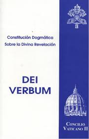

El Concilio Vaticano II fue el vigésimo primer concilio ecuménico de la Iglesia Católica. Se llevó a cabo entre los años 1962 y 1965 bajo los pontificados de los papas Juan XXIII y Pablo VI. Este concilio marcó un punto de inflexión en la relación entre la Iglesia y el mundo moderno.
Las reformas del Concilio afectaron la liturgia, la estructura de la Iglesia, la relación con otras religiones y el enfoque pastoral, permitiendo celebraciones litúrgicas en lenguas vernáculas.
Gaudium et Spes (1965): Es la Constitución Pastoral sobre la Iglesia en el mundo actual. Este documento aborda temas como la dignidad del ser humano, el matrimonio, la economía, y la paz mundial.
Lumen Gentium (1964): Documento sobre la estructura de la Iglesia. Subraya que la Iglesia está formada no solo por el clero, sino también por los laicos, quienes tienen un papel importante.
Dei Verbum (1965): Se enfoca en la Revelación Divina y destaca la importancia de la Biblia y la Tradición en la vida cristiana. Promueve el acceso de los fieles a la Sagrada Escritura.
Creado por: Luis Gabriel | 3ro | James Baldwin